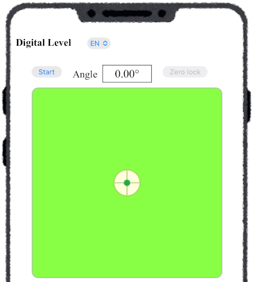
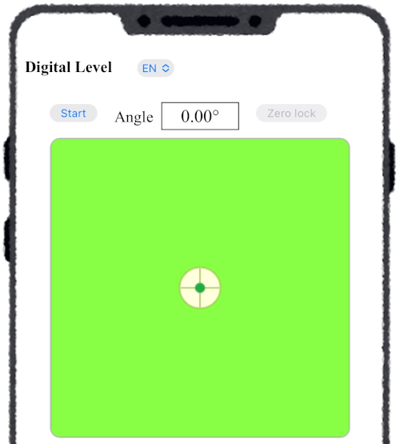
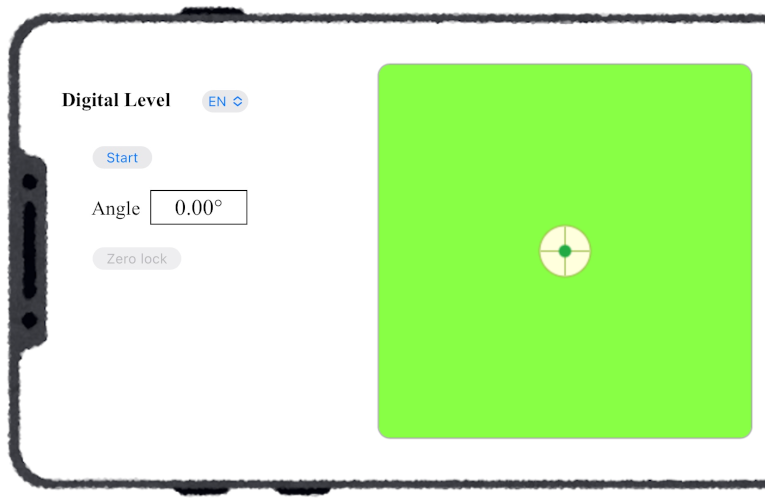
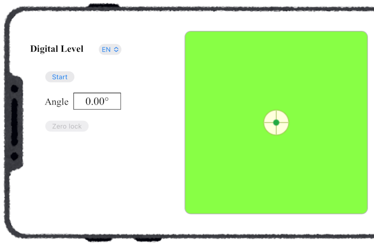
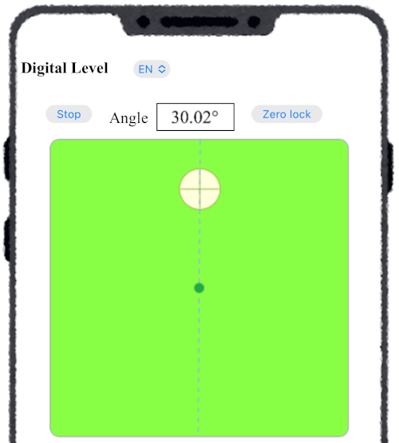
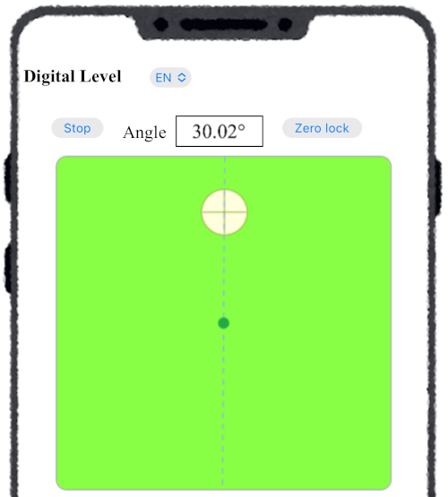

■ Screen structure
Screen of the Level App (Portrait)


When you access the Digital Level (Inclinometer) app, a screen like the one shown in the figure appears. The green area represents a spirit level, with a bubble (white circle in the center) floating inside the light green liquid.
- "Start" Button
This button starts the level and measures the angle of the device’s surface relative to the horizontal plane. Once started, the button changes to "Stop". Clicking it while running will stop the measurement. - Angle Display Area
The measured angle is displayed inside the frame to the right of the "Start" button (or below it in landscape mode). - "Zero Adjustment" Button
While the level is running, clicking the "Zero Adjustment" button sets the current device surface angle as zero (reference) and measures angles relative to it. Clicking the button again cancels this mode.
Screen of the Level App (Landscape)


If auto-rotate is enabled on the device, the display switches to landscape when the device is turned sideways.
By clicking the "Start" button of the level and placing the device on a slope, you can measure the slope angle. As shown in the figure, when the device is placed facing upward on the slope, the bubble on the screen moves upward, and a line (projection of the vertical line) connecting the bubble and the center of the screen is displayed.
Smartphone placed on a slope

Screen when placed on a 30° slope

